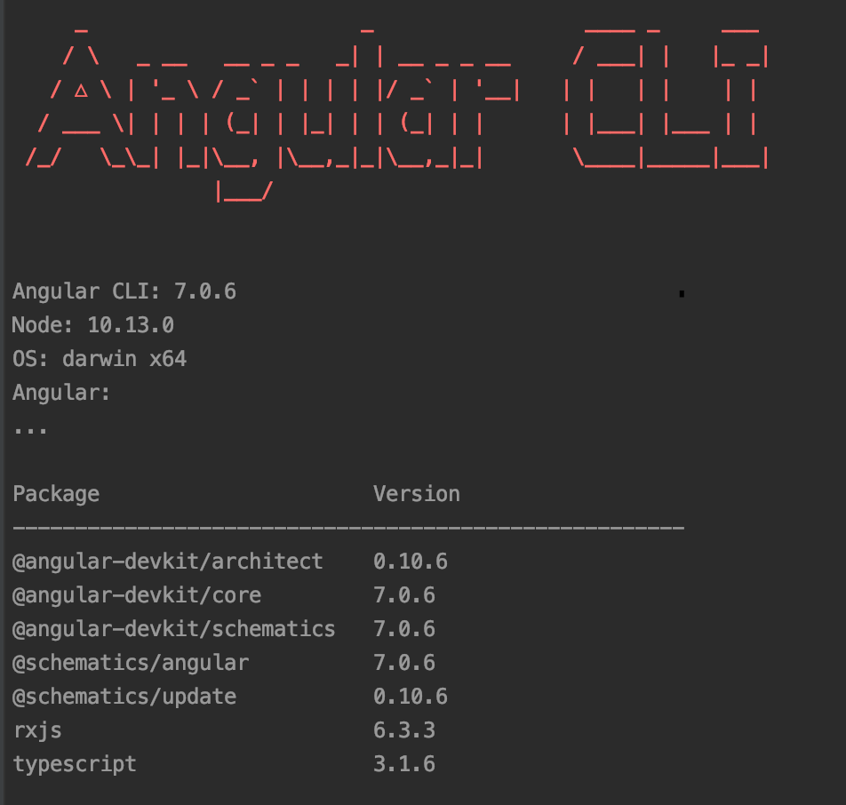

Check that you have node.js and Angular CLI installed. Input in your console:
node -v
If the command is recognized and you got node.js version go to the next step. If not, visit page: nodejs.org and install node.js (download proper version for your OS).
Check that you have node.js and Angular CLI installed. Input in your console:
ng version
Verify that you got following view (check if CLI version is not lower than 6)
If you need update Angular or install the newest version, use this command:
npm install -g @angular/cli